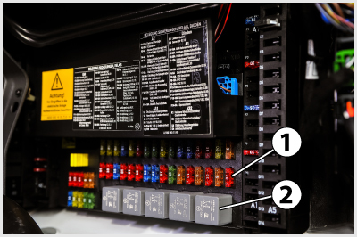
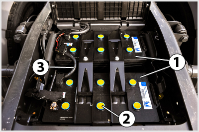
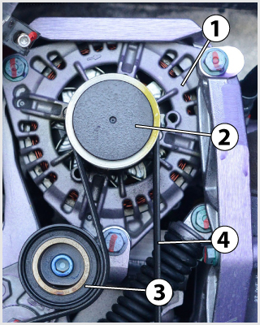
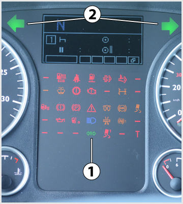
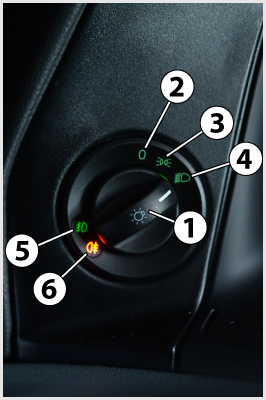

- 77. Milyen szerepet tölt be a biztosíték az áramkörben? #704411
- Zárlat bekövetkezésekor megszakítja az áramkört, hogy az áramerősség ne haladhassa meg a megengedett értéket.
- Akkor szakítja meg az áramkört, ha a feszültség meghaladja a megengedett értéket.
- A generátor túltöltése esetén megszakítja az áramkört, ezzel védi a fogyasztókat.
- Rövidzárlat esetén tartalék áramkörre kapcsol.
- 78. Megfelelő működés esetén az irányjelző percenkénti felvillanásainak száma... #704451
- 60-120.
- 30-60.
- 120-150.
- 15-20.
- 79. Gépkocsijának vagy vontatmányának féklámpái meghibásodtak. Részt vehet-e így a közúti forgalomban? #704466
- Nem.
- Igen, de a hibát minél előbb ki kell javíttatnia.
- 80. Mi a gépjármű generátorának a feladata? #704495
- Igény szerint a fogyasztók közvetlen energiaellátása, illetve az akkumulátor töltése.
- A lemerült akkumulátor töltése.
- Bizonyos villamos fogyasztók közvetlen áramellátása.
- A tüzelőanyag-levegő keverék előállítása a motor részére.
- 81. Miért tilos a kiolvadt biztosítékot dróttal, szöggel vagy egyéb fémtárggyal kiváltani? #704534
- Mert zárlat esetén a vezetékek izzásba jöhetnek, és ezzel tüzet okozhatnak.
- Mert ebben az esetben a túlfeszültség miatt hamarabb kiégnek az izzólámpák, tönkremennek a fogyasztók.
- Mert ebben az esetben lemerülhet az akkumulátor.
- Mert így bizonyos fogyasztók működése rendellenessé válthat.

- 82. A képen látható 1-es jelű biztosíték színe és számfelirata... #704545
- arra az áramerősségre utal, amelynél az kiolvad.
- egyértelműen meghatározza, hogy az melyik áramkör biztosítására szolgál.
- arra a hálózati feszültségre utal, amelynél az alkalmazható.
- azt a járműtípust határozza meg, amelyben az használható.
- 83. A képen látható 1-es jelű biztosítékot szükség esetén vezetékdarabbal, dróttal helyettesíteni... #704546
- tilos.
- lehet.
- lehet, de csak a lehető legrövidebb időre.
- világítóberendezéseket tápláló áramkörök kivételével lehet.

- 84. A képen... #704549
- két, egymással sorba kapcsolt 12 V-os akkumulátor látható.
- két, egymással párhuzamosan kapcsolt 12 V-os akkumulátor látható.
- egy 24 V-os akkumulátor látható.
- egy 12 V-os akkumulátor látható.

- 85. A képen látható akkumulátor adattábláján a 2-es jelű feliratok és az 1-es jelű ’varázsszem’ arra utalnak, hogy... #704581
- az gondozásmentes.
- az rendszeres karbantartást, szükség esetén utántöltést igényel.
- az utántöltést csak akkor igényel, ha a ’varázsszem’ színe zöldről fehérre vált.
- az utántöltést csak akkor igényel, ha a ’varázsszem’ színe zöldről feketére vált.

- 86. A képen látható 1-es jelű alkatrész... #704602
- a generátor.
- az önindító.
- az ablaktörlő motor.
- a vízszivattyú.

- 87. A képen látható 1-es jelű visszajelző lámpa... #704705
- a pótkocsi irányjelzők működését mutatja.
- a vészvillogó működését mutatja.
- a vontató irányjelzőinek működését mutatja.
- a pótkocsi helyzetjelző lámpáinak a működését mutatja.
- 88. Milyen kialakítású a gépjárművek villamos hálózata? #704767
- Egyvezetékes rendszerű, amelyben az akkumulátor negatív pólusát kötik össze a jármű fém vázszerkezetével.
- Egyvezetékes rendszerű, amelyben az akkumulátor pozitív pólusát kötik össze a jármű fém vázszerkezetével.
- Kétvezetékes, ahol minden fogyasztóhoz egy pozitív és egy negatív vezeték van bekötve.
- 89. Mi a biztosíték feladata a jármű villamos hálózatában? #704768
- Rövidzárlat esetén a biztosíték megszakítja az áramkört.
- Rövidzárlat esetén lecsökkenti a fogyasztóra jutó áramerősség nagyságát.
- Egy villamos berendezés meghibásodása esetén hibajelet küld a vezérlőegységnek.
- Rövidzárlat esetén tartalék áramkörre kapcsol.
- 90. Hogyan állítják elő a nehéz haszongépjárművek elektromos rendszerében szokásos 24 V-os fedélzeti feszültséget? #704769
- Két 12 V feszültségű akkumulátor sorba kapcsolásával.
- Két 12 V feszültségű akkumulátor párhuzamos kapcsolásával.
- Egy 24 V feszültségű akkumulátorral.
- Négy 6 V feszültségű akkumulátor sorba kapcsolásával.
- 91. Az akkumulátor kivezető pólusai... #714511
- közül a pozitív a nagyobb átmérőjű.
- azonos átmérőjűek.
- közül a negatív a nagyobb átmérőjű.
- közül a testelést megvalósító a nagyobb átmérőjű.
- 92. Mi a feladata a nehéz haszongépjárműveken alkalmazott akkumulátor-főkapcsolónak? #714512
- A jármű áramtalanítása akkor, ha azt hosszabb ideig nem használjuk.
- A bekapcsolásával hozzuk működésbe az izzógyertyát.
- Leválasztja a nagyobb fogyasztókat a jármű elektromos rendszeréről.
- Kíméli az akkumulátort, mert ha működtetik, akkor a fogyasztókat csak a gépjármű generátora látja el árammal.
- 93. Amikor két darab - egymással folyamatosan sorba kapcsolt - 12 V feszültségű akkumulátor van a járművön, akkor... #714539
- valamennyi fogyasztó, illetve a generátor is 24 V feszültségű.
- valamennyi fogyasztó, illetve a generátor is 12 V feszültségű.
- valamennyi fogyasztó 12 V, a generátor pedig 24 V feszültségű.
- valamennyi fogyasztó, illetve a generátor is 6 V feszültségű.
- 94. Mi a generátor feladata? #714596
- Az akkumulátor töltése és a villamos fogyasztók árammal való ellátása.
- A motor álló helyzetében a villamos fogyasztók árammal való ellátása.
- Az Otto-motor gyújtóberendezésében a nagyfeszültség előállítása.
- A villamos fogyasztók árammal történő ellátása, ha az akkumulátor lemerült, vagy kiszerelték a gépjárműből.
- 95. Milyen színű lehet kizárólag a jármű hátrameneti (tolató) lámpáinak fénye? #714689
- Színtelen (fehér).
- Piros.
- Kadmiumsárga.
- Borostyánsárga vagy fehér.

- 96. A képen látható 6-os jelű visszajelző lámpa... #714693
- a hátsó helyzetjelző ködlámpa bekapcsolt állapotát jelzi.
- a ködfényszóró bekapcsolt állapotát jelzi.
- a tompított fényszóró bekapcsolt állapotát jelzi.
- a pótkocsi helyzetjelő lámpáinak bekapcsolt állapotát jelzi.
- 97. A képen látható akkumulátorok által megvalósított hálózati feszültség... #721099
- 24 V.
- 12 V.
- 6 V.
- 220 V.
- 98. Amikor a dízelmotoros tehergépjármű elektromos hálózata 24 V feszültségű, akkor ezt a feszültséget... #721176
- két - egymással sorba kapcsolt - 12 V feszültségű akkumulátor biztosítja.
- egy darab indítóakkumulátor biztosítja, amelynek névleges feszültsége 24 V.
- két - egymással párhuzamosan kapcsolt - 12 V feszültségű akkumulátor biztosítja.
- egy 12 V feszültségű akkumulátor és egy transzformátor biztosítja.
- 99. Fel kell-e szerelni a járműveket első és hátsó fényvisszaverővel? #721239
- Hátul minden esetben kötelező, elöl a pótkocsikon kötelező.
- Igen, elöl és hátul is kötelező.
- Lehet, de nem kötelező.
- Elöl minden esetben kötelező, hátul csak a pótkocsikon kötelező.
- 100. Milyen színű a gépkocsi hátsó helyzetjelző ködlámpájának működését jelző lámpa fénye a műszerfalon? #721240
- Borostyánsárga.
- Vörös.
- Kék.
- Zöld.
- 101. A képen látható 3-as jelű vezeték... #724160
- a két 12 V-os akkumulátor sorba kapcsolására szolgál.
- az akkumulátorok közös testvezetéke.
- az önindító áramellátásáról gondoskodik.
- a generátorhoz vezet.
- 102. Milyen színű lehet a hátsó helyzetjelző lámpák fénye? #724232
- Piros.
- Kadmiumsárga.
- Fehér.
- Borostyánsárga.
- 103. Milyen színű fényt bocsáthatnak ki a járművek féklámpái? #724234
- Kizárólag piros.
- Fehér vagy kadmiumsárga.
- Borostyánsárga.
- Borostyánsárga vagy piros.